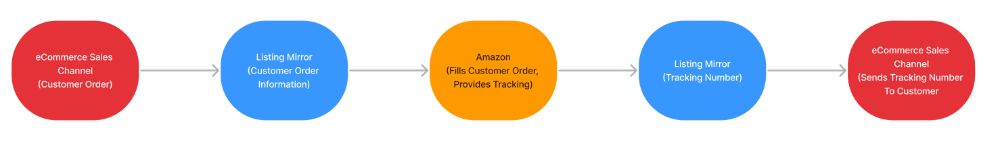

Amazon Multi-Channel Fulfillment (MCF) is a third-party logistics (3PL) solution that enables eCommerce businesses to leverage Amazon's fulfillment network and expertise to power their growth beyond Amazon.com. Businesses around the world rely on MCF to fulfill their customer orders on time, every time, through any sales channel. Learn more
Our software allows you to utilize MCF to sell your FBA inventory on your other sales channels. We send your orders from your sales channels directly to Amazon for them to fill. Once filled, they provide the tracking data to us, who we provide back to the marketplace.
You may have more than one FBA inventory source. Ensure you're enabling the correct region.
Enabling Autofill MCF Orders, is not required. If this feature is disabled, you'll need to send orders to Amazon manually from the orders page. Learn more
Additionally, can prevent your customers from receiving an Amazon branded box, and an Amazon tracking number. Enable Block Amazon Logistics, and Amazon Blank Box. Learn more
In rare circumstances, Amazon Blank Box can increase leadtime, potentially missing deadlines. To resolve this, you'll need to fill the order on Amazon manually without blank box, cancel the order, or fill the order using non-FBA inventory.
Amazon fulfills your orders at 1 business day (Priority), 2 business days (Expedited), or 3-5 business days (Standard) from when the order ships. If we detect an order as one of these priorities, we'll send them to Amazon for fulfillment using these speeds.
To use MCF to fill your orders, you'll want to confirm your leadtime on the market closely matches Amazon's MCF leadtime. Amazon is constantly improving, but the safe, standard expectation is a two-day leadtime on FBA items.